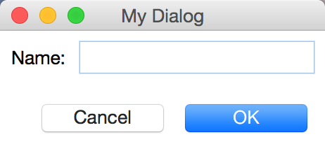
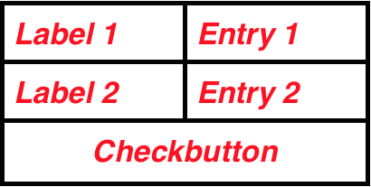
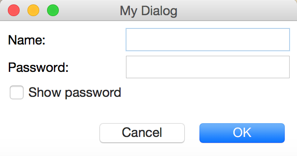

While the standard dialogs may be sufficient for many simpler applications, most larger applications require more complicated dialogs. For example, to set configuration parameters for an application, you will probably want to let the user enter more than one value or string in each dialog.
Creating a dialog window is no different from creating an application window. Just use the Toplevel widget, the necessary entry fields, buttons, and other widgets into it, and let the user take care of the rest.
If you implement dialogs in this way, you may end up getting both your users and yourself into trouble. The standard dialogs all returned only when the user had finished her task and closed the dialog, but if you just display another toplevel window, everything will run in parallel. If you’re not careful, the user may be able to display several copies of the same dialog, and both she and your application will be hopelessly confused.
In many situations, it is more practical to handle dialogs in a synchronous fashion:
The wait_window method is exactly what we need: it enters a local event loop, and doesn’t return until the given window is destroyed (either via the destroy method, or explicitly via the window manager). The following is a simple example:
widget.wait_window(widget)Note that the method waits until the window given as an argument is destroyed. The only reason this is a method is to avoid namespace pollution.
In the following example, the MyDialog derives from a Toplevel widget, and it has some widgets. The caller then uses wait_window to wait until the dialog is closed. If the user clicks OK, the entry field value is printed, and the dialog is then explicitly destroyed.
# Chapter: Create Your Own Dialogs
# Description: simple dialog derived from Toplevel
# File: mydialog.py
import tkinter as tk
class MyDialog(tk.Toplevel):
def __init__(self, parent, message):
tk.Toplevel.__init__(self, parent)
self.parent = parent
self.label = tk.Label(self, text=message)
self.label.pack()
self.entry = tk.Entry(self)
self.entry.pack(padx=5)
self.button = tk.Button(self, text="OK", command=self.ok)
self.button.pack(pady=5)
def ok(self):
print("You entered: ", self.entry.get())
self.destroy()
if __name__ == '__main__':
root = tk.Tk()
button = tk.Button(root, text='Click me')
button.pack()
dialog = MyDialog(parent=root, message='Enter something')
root.wait_window(dialog)If you run this program, you can type something into the entry field, and then click OK, after which the program terminates, after calling the destroy method of the Toplevel.
Note that we didn’t call the mainloop method here, because the local event loop handled by wait_window is sufficient.
However, there are a few problems with this example:
The root window is still active. You can click on the button in the root window also when the dialog is displayed. If the dialog depends on the current application state, letting the users mess around with the application itself may be disastrous. Being able also to display multiple dialogs (or even multiple copies of one dialog) is a sure way to confuse the users of the application.
We have to explicitly click in the entry field to move the cursor into it. We have also to click on the OK button to have a response from the program: it is not sufficient to press enter or return in the entry field.
There should be some controlled way to cancel the dialog. We should handle the WM_DELETE_WINDOW protocol.
To address the first problem, Tkinter provides a method called grab_set, which makes sure that no mouse or keyboard events are sent to the wrong window.
The second problem consists of several parts.
We need to explicitly move the keyboard focus to the dialog. This can be done with the focus_setmethod.
We need to bind the Enter key so it calls the ok method. This is easy, just use the bind method on the Toplevel widget, and make sure to modify the ok method to take an optional argument so it doesn’t choke on the event object. You will see in the next example.
The third problem can be handled by adding an additional Cancel button which calls the destroy method, and also use bind and protocol methods to do the same when the user presses respectively Escape or explicitly closes the window.
The following MyDialog class provides all this, and a few additional tricks. To implement your own dialogs, simply inherit from this class and override the set_body, validate and apply methods. The first should create the dialog body with labels, entries, images, etc. The second, can be overridden to validade whatever you want. The last is called to apply eventually some changes to whatever you want.
# Chapter: Create Your Own Dialogs
# Description: more advanced dialog derived from Toplevel
# File: mydialog2.py
import tkinter as tk
class MyDialog(tk.Toplevel):
def __init__(self, parent, title='My Dialog', **options):
"""parent should be a Toplevel or a Frame widget"""
tk.Toplevel.__init__(self, parent)
self.parent = parent
self.transient(self.parent)
self.title(title)
self.result = None
self.body = tk.Frame(self)
self.set_body(self.body)
self.body.pack(expand=1, fill='both', padx=5, pady=5)
self.body.focus_set()
self.footer = tk.Frame(self)
self.set_footer(parent=self.footer)
self.footer.pack(fill='both', padx=5, pady=5)
# Binding the Return and Escape events
# with respectively the self.ok and self.cancel methods
self.bind("<Return>", self.ok)
self.bind("<Escape>", self.cancel)
# Handling the closing window event or protocol
self.protocol("WM_DELETE_WINDOW", self.cancel)
self.geometry("+{0}+{1}".format(self.parent.winfo_rootx() + 50,
self.parent.winfo_rooty() + 50))
# Mouse and keyword events are sent to self
self.grab_set()
# self waits for self
def set_body(self, parent, *args):
"""Override this method to add widget to the body of the dialog
parent is the top Frame where the widgets can be packed or grided"""
message_label = tk.Label(parent, text="Hello World", border=1,
relief='groove', font=('Arial', 16),
padx=20, pady=10)
message_label.pack(expand=1, fill='both', padx=40, pady=10)
def set_footer(self, parent):
"""Standard buttons of the dialog.
Override this method, if you don't want the standard buttons"""
ok_button = tk.Button(parent, text="OK", width=8,
command=self.ok, default='active')
ok_button.pack(padx=5, pady=5, side='right')
cancel_button = tk.Button(parent, text="Cancel", width=8,
command=self.cancel)
cancel_button.pack(padx=5, pady=5, side='right')
def ok(self, event=None):
"""event parameter is necessary
because we have also binded some events with this method.
An event is sent as first parameter
to its associated handler method
when the same event occurs."""
if not self.validate():
if self.body:
self.body.focus_set() # put focus back
return
self.withdraw() # Hides self
self.update_idletasks()
self.apply()
self.cancel()
def cancel(self, event=None):
# put focus back to the parent window
self.parent.focus_set()
self.destroy()
def validate(self):
"""This method is called inside self.ok
to validade eventually the contents of self.body.
You should override this method
along with the self.body and self.apply method"""
return False
def apply(self, *args):
"""If self.validade returns True,
this method will apply something when you click OK"""
pass
def say_hello():
print('Hello')
if __name__ == '__main__':
root = tk.Tk()
button = tk.Button(root, text='Hello', command=say_hello)
button.pack()
dialog = MyDialog(root)
# it's sufficient, in this case, to use the local event loop
root.wait_window(dialog) The main trickery is done in the constructor. First, transient is used to associate self with a parent window (usually the application window from which the dialog was launched). The dialog won’t show up as an icon in the window manager (it won’t appear in the task bar under Windows or Mac, for example).
Next, the constructor calls set_body, which can be overridden to add widgets to the body of the dialog, and set_footer, which adds the standard buttons to the footer frame. Note that we call the focus_set method on the body frame in order to move the keyboard focus to it. Note also that we bind the Enter key to the ok method, and Escape key to cancel method. In the set_footer function, the default property of the button ok_button is set to active. This marks this button as a default button in a platform specific way.
We define after the protocol WM_DELETE_WINDOW. We basically associate the closing event of the dialog with the call to the method cancel, which will destroy the dialog along with all its children, calling the method destroy.
The constructor calls then the geometry method in order to define the position (but not the size) of self, respect to its parent window.
At the end, the constructor calls grab_set to make the dialog modal.
Using this class is much easier than figuring out how it’s implemented. Just create the necessary widgets in the set_body method, and carry out whatever you wish to do in the apply method.
In the following example, we are deriving from the previous MyDialog class, and we are also overriding the set_body, validate and apply methods:
# Chapter: Create Your Own Dialogs
# Description: class that derives from MyDialog of mydialog2.py
# File: mydialog3.py
import mydialog2 as dialog
import tkinter as tk
class MyDialog(dialog.MyDialog):
def set_body(self, parent):
self.name_label = tk.Label(parent, text="Name: ")
self.name_label.pack(side='left', fill='both')
self.name_entry = tk.Entry(parent)
self.name_entry.pack(side='right', fill='both')
self.name_entry.focus()
def validate(self):
return True
def apply(self, *args):
print('Your name is', self.name_entry.get())
if __name__ == '__main__':
root = tk.Tk()
dialog = MyDialog(root)
root.mainloop()The following screenshot shows the result of the code above on a OS X Yosemite (version 10.10.2):

The above example did the actual processing in the apply method (okay, a more realistic example should probably do something with the result, rather than just printing it). Instead of doing the processing in the apply method, we could also have stored the entered data in an instance attribute:
self.result = self.name_entry.get()Then we could have accessed the result property and use it as we want. Make sure to initialize result to a value like None, so that in some situations, when the result is required, we can check if it’s None or not, before doing some operations with it.
Note that if the dialog is cancelled, the apply method is never called.
While the pack manager is convenient to use when to design application windows, it may not be that easy to use for dialogs. A typical dialog may include a number of entry fields and check boxes, with corresponding labels that should be properly aligned. Consider the following simple example:

To implement this using the pack manager, we could create a frame to hold the the Label 1 and Entry 1, and use side=LEFT when packing them. We could create another frame for Label 2 and Entry 2. Finally, we could pack these frames and the Checkbutton into the outer frame using side=TOP.
Unfortunately, packing the labels in this fashion makes it difficult to get the entry fields lined up, and if we use side=RIGHT to pack the entry field instead, things break down if the entry fields have different width. By carefully using width options, padding, side and anchor packer options, etc, we can get reasonable results with some effort. But there’s a much easier way: use the grid manager.
This layout manager splits the master widget (typically a frame) into a 2-dimensional grid, or table. For each widget, you only have to specify where in this grid it should appear (in which row and column), and the grid managers takes care of the rest. The following set_body method shows how to get the above layout for the body of the dialog (and the standard buttons for the footer of the dialog):
# Chapter: Create Your Own Dialogs
# Description: Using the grid layout to create a dialog
# File: mydialog4.py
import mydialog2 as dialog
import tkinter as tk
class MyDialog(dialog.MyDialog):
def set_body(self, parent):
self.name_label = tk.Label(parent, text="Name: ")
self.name_label.grid(row=0, column=0, sticky='w')
self.name_entry = tk.Entry(parent)
self.name_entry.grid(row=0, column=1)
self.name_entry.focus()
self.password_label = tk.Label(parent, text="Password: ")
self.password_label.grid(row=1, column=0, sticky='w')
self.pwd_entry = tk.Entry(parent, show='*')
self.pwd_entry.grid(row=1, column=1)
self.value = tk.IntVar(parent)
# Using a lambda to change the property show of self.pwd_entry
self.show_password = tk.Checkbutton(parent, variable=self.value, text='Show password',
command=lambda: self.pwd_entry.config(show='') \
if self.value.get() == 1 \
else self.pwd_entry.config(show='*'))
self.show_password.grid(row=2, column=0)
def validate(self):
return True
def apply(self, *args):
print('Your name is:', self.name_entry.get())
print('Your password is:', self.pwd_entry.get())
if __name__ == '__main__':
root = tk.Tk()
dialog = MyDialog(root)
root.mainloop()For each widget that should be handled by the grid manager, you call the grid method with the row and column options, telling the manager where to put the widget. The topmost row, and the leftmost column, is numbered 0 (this is also the default). Here, the checkbutton is placed beneath the second label and entry widgets.
Note that we are also using the option sticky='w' when griding the labels to make them align to the left or west.
The following screenshot shows the result of the code above on a OS X Yosemite (version 10.10.2):

When its time to display the frame widget (the parent parameter of the set_body method), the grid geometry manager loops over all widgets, calculating a suitable width for each row, and a suitable height for each column. For any widget where the resulting cell turns out to be larger than the widget, the widget is centered by default. The sticky option is used to modify this behavior (as we mentioned above). By setting it to one of E, W, S, N, NW, NE, SE, or SW, you can align the widget to any side or corner of the cell. Note that you can specify other sticky values, for example combining the 4 directions N+S+W+E (or maybe simply using the string syntax 'nsew': instead of specifying the constant, for example, N, you can also specify the value as a lower case string 'n').
Combining, for eample, W and E we can make widget strect from the left (West) to the right (East). In practice, the sticky option replaces the fill, expand, and anchor options used by the pack manager.
The grid manager provides many other options allowing you to tune the look and behavior of the resulting layout. These include padx and pady (we can also use thes options with the pack manager) which are used to add extra padding to widget cells, and many others.
The decision between the use of pack or grid depends on the situation and on what we want to represent. Experience can help choosing between one or the other.
What if the user types wrong data into the dialog? We could of course handle these situations with try-except constructs and a standard messagebox. We are going to override the validate method, which was created specifically for this purpose:
def validate(self):
try:
int(self.entry.get())
return True
except ValueError:
messagebox.showwarning("Incorrect entry input")
return FalseNote that this method is called at the beginning of the ok method, in order to validate the input data when the user clicks the button.